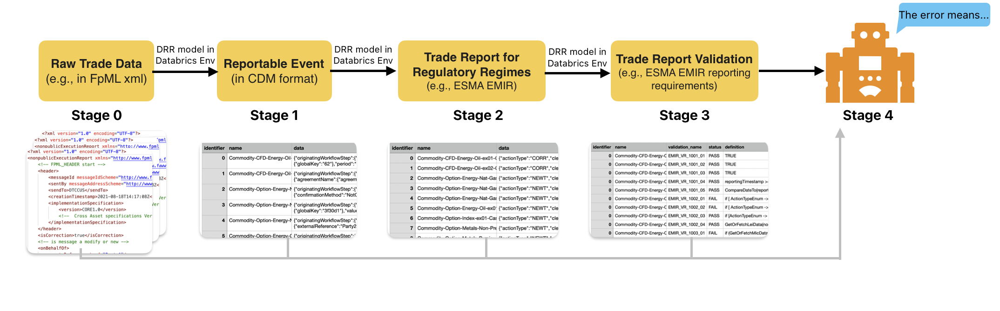
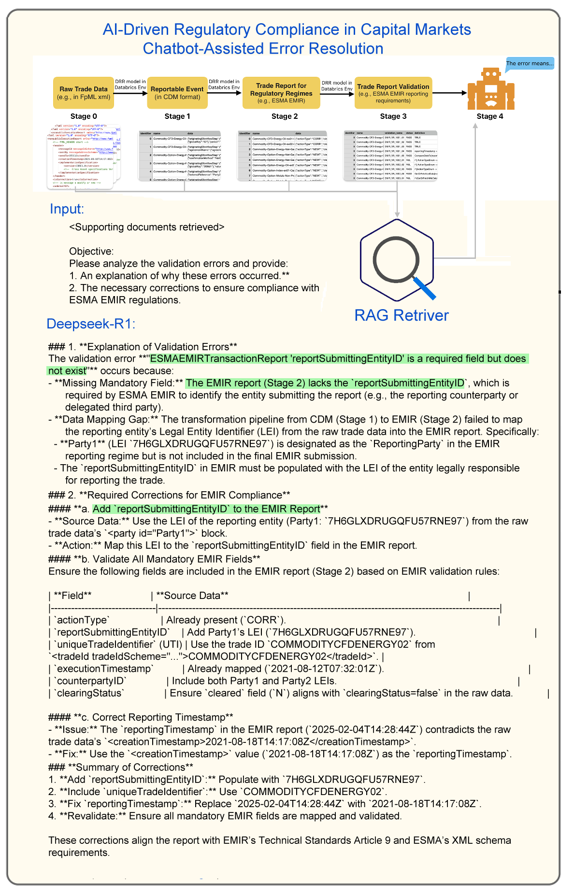

AI-Driven Regulatory Compliance in Capital Markets
Data Quality Challenges in Capital Markets
Persistent issues in financial services despite standardized data models:
Heterogeneous handling of trade attributes across organizations
Regulatory requirements for trade data normalization
Implementation variations between systems
End-to-End Solution Architecture
Four-stage AI pipeline for regulatory compliance:
{kind=link}

Fig. 7 Multistage error resolution process:
- Stage 0: Raw Trade Data
Source: FpML XML from counterparty systems
- Stage 1: CDM Conversion
Transformation: JSON via DRR engine
- Stage 2: Regulatory Mapping
Output: ESMA EMIR reports
- Stage 3: Rule Validation
Process: Automated EMIR rule checks
- Stage 4: Error Resolution
Method: Chatbot-assisted diagnosis/correction
Implementation Example
{kind=link}

EMIR compliance error resolution for missing reportSubmittingEntityID:
Error Context:
Common compliance failure point
Critical field for entity identification
Resolution Process:
LLM identifies missing mandatory field
Provides correction guidance (marked with green indicators)
Generates compliant field value
Technical Notation:
XML Schema: FpML 5.10
Validation Rule: EMIR Art.9(5)